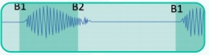
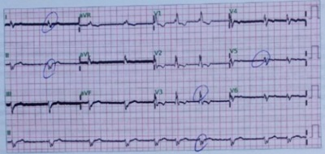
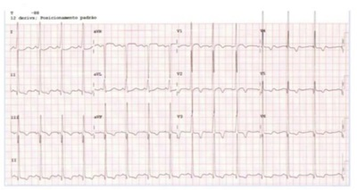
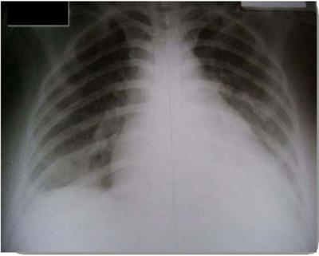
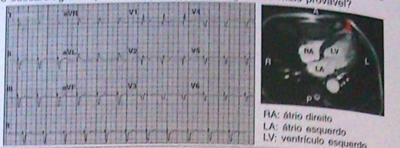

Questão 1 · Miocardite · COVID 19 · 4000166956O coronavírus tem provocado graves complicações ao aparelho respiratório e, em muitos casos, acomete o corpo de maneira sistêmica, levando à falência de outros órgãos, a exemplo do coração. Considerando a arritmia cardíaca e a miocardite no contexto da Covid-19, analise as proposições abaixo e, em seguida, assinale a alternativa CORRETA: I. Apesar do modo de ação dos mecanismos ultraestruturais de ação do vírus ainda não serem concretos, é provável que ele se ligue a um receptor viral nas células do tecido muscular cardíaco, os miócitos, de modo a desencadear a sua internalização e, consequentemente, a replicação das proteínas do capsídeo e do genoma viral no interior destas, o que leva a uma resposta inflamatória exagerada. II. A miocardite tem sido evidenciada a partir de achados patológicos obtidos por meio de autópsias, as quais indicam a presença de células do miocárdio com in ltrados inflamatórios mononucleares intersticiais. Junto a isso, há também casos relatados de miocardite grave com redução da função sistólica em pacientes com Covid-19. III. Entre os pacientes hospitalizados pela Covid-19, estudos evidenciaram alta prevalência de biomarcadores cardíacos, os quais são demasiadamente sugestivos de lesão cardíaca. Porém, os indícios são de que a lesão do miocárdio não esteja relacionada a essa inflamação ou às condições isquêmicas causadas pela infecção.
A I, II e III estão corretas.
B Somente II e III estão corretas.
C Somente I e III estão corretas.
D Somente I e II estão corretas.
Questão 2 · Miocardite · 4000166161Um menino de sete anos de idade foi levado ao pronto-socorro com história de febre baixa e coriza há uma semana. Há dois dias, apresenta cansaço aos pequenos esforços, dor abdominal e palpitações. Ao exame físico, está taquidispneico, gemente, com frequência cardíaca de 154 bpm, pressão arterial normal para a idade, pulsos nos e hepatomegalia. A radiografia torácica mostra cardiomegalia e o eletrocardiograma, inversão da onda T nas derivações precordiais. O ecocardiograma revela aumento de câmaras esquerdas, com disfunção sistólica de ventrículo esquerdo, sem alterações estruturais. Com base nesse caso hipotético, assinale a alternativa correta.
A A biópsia endomiocárdica é obrigatória para definir o diagnóstico de miocardite.
B A troponina I é um marcador diagnóstico sensível e específico.
C A ressonância magnética cardíaca é o padrão-ouro para avaliar volumes ventriculares, além de demonstrar inflamação e necrose.
D A epinefrina seria mais segura que o milrinone, por ser menos arritmogênica.
E Corticosteroides estão contraindicados, pela probabilidade de etiologia infecciosa.
Questão 3 · Miocardite · Cardiologia · 4000146226A Cardiotoxicidade CT tipo I. mais comumente se apresenta no primeiro ano do término da quimioterapia, ou ainda até duas a três décadas após completar o tratamento, como disfunção sistólica progressiva. Sendo adequado que:
A Raramente pode se apresentar como uma disfunção sistólica aguda, imediatamente antes administração da dose.
B Não pode se apresentar como uma disfunção sistólica aguda, imediatamente após administração da dose.
C Raramente pode se apresentar como uma disfunção diastólica aguda, imediatamente após administração da dose.
D Raramente pode se apresentar como uma disfunção sistólica aguda, imediatamente após administração da dose.
Questão 4 · Etiologia · Cardiopatia dilatada · 4000142482Dentre as condições apresentadas, assinale aquela que de ejeção do ventrículo esquerdo.
A Doença de Chagas.
B Tratamento com daunorrubicina.
C Miocardite viral.
D Miocardite alcoólica.
E Beribéri.
Questão 5 · Cardiopatia hipertróf ica · Cardiologia · Cardiomiopatia hipertróf ica · 4000137420Homem, 24 anos, apresenta síncope durante partida de futebol. Em avaliação médica posterior são identi cados: ritmo cardíaco regular; presença de quarta bulha; sopro sistólico (SS) no 4º espaço intercostal esquerdo, que aumenta com manobra de Pode-se afirmar em relação à abordagem terapêutica desse paciente, caso haja historia de morte súbita na família, que está:
A contraindicado o uso de verapamil.
B contraindicado o uso de bloqueador do receptor beta adrenérgico.
C indicado o implante de marcapasso definitivo.
D indicado cardiodesfibrilador implantável.
Questão 6 · Inf arto Agudo do miocárdio com supra de ST IAMCSST · Cardiomiopatias · Cardiologia · 4000131172Um paciente de 35 anos de idade, com miocardiopatia isquêmica dilatada com fração de ejeção prévia de 30%, encaminha- se à emergência com dor torácica em aperto há sete horas, dispneia importante e sudorese. Foram solicitados exames laboratoriais que demonstraram hemograma normal, função renal e eletrólitos normais. Seu peptídeo natriurético cerebral (BNP) era de 300 pg/mL (valor de referência até 150 pg/dL). Solicitou-se, então, o eletrocardiograma representado na figura a seguir. Fonte ECG: John Hamptom 150 ECGs problems Considerando esse caso clínico, a figura apresentada e os conhecimentos médicos correlatos, julgue o item a seguir. Miocardiopatia isquêmica dilatada é a forma mais rara das miocardiopatias dilatadas

A Certo.
B Errado.
Questão 7 · Cardiopatia hipertróf ica · Exame f ísico · Cardiologia · 4000147122Gabriel, 28 anos, comparece ao pronto-socorro queixando-se de ter apresentado síncope ao jogar partida de futebol. Ao exame físico, apresentava PA: 130/78, FC: 80 bpm, ausculta pulmonar normal e, à ausculta cardíaca, foi ouvido um sopro, conforme a representação abaixo: Sobre esse caso clínico, é correto afirmar que:

A Esse sopro deve diminuir com a manobra de
B Com os dados apresentados, podemos afirmar que se trata de um caso de cardiomiopatia hipertrófica.
C A principal etiologia para o quadro é reumática.
D A manobra de Valsalva não contribuiria para o diagnóstico diferencial nesse caso.
Questão 8 · Quadro Clínico · 4000116305Jovem, do sexo masculino, dezesseis anos de idade, foi levado ao pronto socorro com quadro de há uma semana estar apresentando febre e dor em joelho direito, no tornozelo direito e no punho esquerdo de caráter migratório. Nos últimos dois dias, começou a ter dispneia ao executar atividades físicas menos intensas que as habituais e ortopneia, e relata sentir há dois dias dor precordial leve e contínua. Exame físico: palidez cutânea, temperatura axilar de 38,2ºC, pressão arterial de 120mmHg x 72 mmHg, frequência cardíaca de 110 bpm. ritmo cardíaco regular etríplice (por terceira bulha), bulhas hipofonéticas e taquicárdicas, presença de sopro holossistólico, mais bem audível no foco mitral, irradiado para região axilar. Na borda esternal esquerda baixa, foi auscultado atrito pericárdico. Havia estertores pulmonares em terços inferiores de ambos os hemitórax. Abdome livre e sem visceromegalias. O eletrocardiograma (ECG) mostrou taquicardia sinusal, frequência ventricular média de 120 spm, sobrecarga de câmaras esquerdas, extrassístoles ventriculares isoladas e alterações difusas e secundárias da repolarização ventricular. O resultado das hemoculturas colhidas foi negativo. O hemograma evidenciou discreta leucocitose, sem anemia. Observaram-se aceleração da velocidade de hemossedimentação (VHS), elevação dos níveis séricos de antiestreptolisina O e de proteína C reativa. A principal hipótese diagnóstica para esse paciente é:
A Miocardite viral.
B Artrite reumatoide.
C Endocardite infecciosa.
D Cardite reumática aguda.
E Miopericardite bacteriana.
Questão 9 · Doença de Chagas · 4000115186A doença de Chagas é uma doença infecciosa, cujo agente etiológico é o Trypanosoma cruzi, com fenótipos heterogêneos na apresentação clínica com diversos aspectos, demonstre o item incorreto:
A A apresentação clínica variando desde formas subclínicas e/ou sintomas inespecíficos, até a forma fulminante de IC, com grave comprometimento hemodinâmico.
B O diagnóstico de miocardite ainda constitui desafio na atualidade, entre outras razões, pela homegeinidade da apresentação clínica.
C No contexto da doença de Chagas, o diagnóstico de miocardite torna-se ainda mais difícil e complexo.
D A apresentação clínica polimórfica da fase aguda, crônica e nas reativações.
Questão 10 · Doença de Chagas · 4000114968A reativação da infecção por T. cruzi clínica tem manifestações cardíacas e extra- cardíacas, incluindo miocardite, disfunção ventricular, arritmias, bloqueios atrioventriculares/intraventriculares novos no ECG, lesões cutâneas (nódulos subcutâneos, paniculite etc.), febre, acometimento de medula óssea ou manifestações neurológicas. Podemos apenas concordar com o item:
A A miocardite da reativação pode ser equivocadamente diagnosticada como rejeição do enxerto e tratada com intensificação do tratamento imunossupressor, o que melhora a reativação.
B A miocardite da reativação não pode ser equivocadamente diagnosticada como rejeição do enxerto e tratada com intensificação do tratamento imunossupressor.
C A miocardite da reativação pode ser equivocadamente diagnosticada como rejeição do enxerto e tratada com retirada do tratamento imunossupressor, o que agrava a reativação.
D A miocardite da reativação pode ser equivocadamente diagnosticada como rejeição do enxerto e tratada com intensificação do tratamento imunossupressor, o que agrava a reativação. ida oib pr ed
Questão 11 · Miocardite · Cardiologia · 4000083616Miocardite é um processo inflamatório envolvendo o miocárdio e que pode ser causada por infecções ou toxinas. O agente etiológico mais comumente associado é:
A Taenia solium
B Coxiella burnetii
C Trypanosoma cruzi
D Haemophilus influenzae
Questão 12 · Tumores cardíacos · 4000076107Mulher de 27 anos é admitida na emergência com quadro de edema agudo de pulmão de difícil controle. Há histórico de palpitações intermitentes, com ocorrência variável conforme a postura assumida, além de febre recorrente, emagrecimento e anemia. No exame clínico feito há duas semanas, observaram-se diversas efélides e um ru ar diastólico à ausculta, não precedido de estalido de abertura, em foco mitral. Auscultou-se ainda outro ruído protomesodiastólico, ambos os ruídos observados eram intermitentes sendo mais audíveis em ortostase. O ecocardiograma revela, no átrio esquerdo, uma massa de 4cm de diâmetro, de brilho central heterogêneo, móvel, pedunculada, aderida ao septo interatrial. O diagnóstico mais provável, nesse caso, é:
A endocardite de Libman-Sacks
B endocardite infecciosa
C trombo intracardíaco
D mixoma cardíaco
Questão 13 · Cardiomiopatia de Takotsubo · 4000074106Mulher, branca, de 64 anos é atendida na UPA, queixando-se de dor torácica com irradiação para o dorso, logo após uma discussão com o esposo. Ao exame físico, estava lúcida, anictérica, acianótica, pálida +/4+ levemente taquipneica. PA: 130x70 mmHg FC86 bpm e ausculta cardiovascular com ritmo cardíaco regular 3 tempos com bulhas normofonéticas sem sopros. O plantonista desconfia de cardiomiopatia de Takotsubo, pois no ecodoplercardiograma foi observado:
A Acinesia do ápice do ventrículo esquerdo.
B Hipocinesia difusa do ventrículo esquerdo.
C Hipertrofia concêntrica intensa.
D Hipertrofia septal assimétrica.
Questão 14 · Miocardite · 4000053669A miocardite pode resultar de múltiplas causas, mas é mais atribuída a agentes infecciosos capazes de produzir lesão no miocárdio por meio de invasão direta, produção de substâncias cardiotóxicas ou in amação crônica com ou sem infecção persistente. Sobre a etiologia da miocardite, considere as seguintes afirmativas. 1. Após a entrada do vírus pelas vias respiratórias ou pelo trato gastrointestinal, é possível haver infecção de órgãos que possuam receptores específicos. 2. A maior parte das infecções bacterianas pode envolver o coração, por invasão direta e formação de abscesso. 3. A infecção fúngica ocorre em razão de disseminação hematogênica, entretanto o envolvimento cardíaco raramente domina o quadro clínico destas infecções. 4. A miocardite por doença de Lyme, na maioria dos casos apresenta-se com artrite e doença do sistema de condução. Assinale a resposta correta.
A Somente a afirmativa 3 é verdadeira;
B Apenas as afirmativas 1 e 2 são verdadeiras;
C Apenas as afirmativas 3 e 4 são verdadeiras;
D Apenas as afirmativas 1, 2 e 4 são verdadeiras;
E As afirmativas 1, 2, 3 e 4 são verdadeiras.
Questão 15 · Miocardite · 4000029914Qual das seguintes medicações está associada a maior recorrência de miocardite viral?
A Corticosteroides.
B Aspirina.
C Colchicina.
D Ibuprofeno.
Questão 16 · Cardiomiopatia hipertróf ica · 4000022781Homem de 35 anos, com queixa de dor torácica e palpitações aos esforços moderados, sem relato de fadiga ou síncope. À ausculta apresenta sopro sistólico ejetivo melhor ouvido na borda esternal esquerda, 3º espaço intercostal, e intensi cado por manobra de Valsalva. História familiar de morte súbita paterna. O exame mais indicado na investigação etiológica é:
A eletrocardiograma.
B teste ergométrico.
C ressonância magnética cardíaca.
D angiografia coronária.
E teste genético.
Revisar: possível letra faltando em enunciado
Questão 17 · Miocardite · 4000117039Paciente de 40 anos cursou com tosse com expectoração clara, febre de 38° C e mialgia há 3 dias, sendo avaliado em Unidade de Saúde de Família (USF) e tratado com sintomáticos, paracetamol e loratadina. Após 1 semana houve piora do quadro, com dispneia, ortopneia, inapetência, edema de membros inferiores 2+/4, sendo internado para investigação. Hemograma com leucocitose (70% linfócitos e 2% eosinó los), creatinina 1,2 mg/dl, Na 138 mEq/l, K 3.,5 mEq/l, albumina 3.0 g/dl, Urina I com proteínas + / 4+, microalbuminúria 300 mg/24h, anti-DNA negativo. RX de tórax com aumento das câmaras cardíacas e ecocardiograma com hipocinesia difusa, fração de ejeção 25%. Recebeu tratamento clínico com melhora após 2 semanas. Considerando o quadro exposto, qual hipótese mais provável?
A Síndrome nefrítica.
B Síndrome nefrótica.
C Atividade lúpica.
D Miocardite viral.
E Síndrome de Churg-Strauss.
Questão 18 · Displasia arritmogênica do VD · 4000101402Paciente com história de taquicardia ventricular realizou ecocardiograma que evidenciou aumento do ventrículo direito, com anormalidade da parede e formação de aneurisma apical deste ventrículo. Diante da possibilidade de displasia arritmogênica do ventrículo direito. Espera-se encontrar as seguintes alterações eletrocardiográficas:
A Elevação do segmento ST e onda T apiculada em D1 e aVL.
B Intervalo PR curto e onda delta no complexo QRS de várias derivações.
C Aumento do intervalo QT e presença de onda U em algumas derivações.
D Entalhe terminal do complexo QRS e inversão da onda T em V1, V2 e V3.
Questão 19 · Cardiomiopatia de Takotsubo · 4000095318Paciente de 63 anos, sem fatores de risco maiores, internada em unidade de cuidados intensivos especializada com diagnóstico de Síndrome do Coração Partido. O cateterismo cardíaco não demonstrou lesões obstrutivas e os marcadores de necrose foram positivos, com isquemia subepicárdica em parede anterior extensa como achado eletrocardiográfico. Qual das terapias abaixo seria incabível no primeiro atendimento dessa paciente?
A Trombólise com tenecteplase.
B Ácido acetilsalicílico.
C Ticagrelor.
D Prasugrel.
E Enoxaparina.
Questão 20 · Tumores cardíacos · 4000090114Qual é a localização mais frequente (80-90%) dos mixomas cardíacos (tumor intracardíaco):
A Átrio direito.
B Átrio esquerdo.
C Ventrículo direito.
D Ventrículo esquerdo.
Questão 21 · Cardiomiopatia de Takotsubo · 4000069924Mulher de 39 anos foi internada em CTI devido a quadro de hemorragia subaracnoide com necessidade de intervenção hemodinâmica e suporte ventilatório invasivo; apresenta episódios intermitentes de taquicardia sinusal e hipertensão arterial, interpretados pelos neurologistas assistentes como disautonomia associada ao quadro neurológico. A tentativa de desmame de prótese ventilatória é fracassada por surgimento de congestão pulmonar. O eletrocardiograma mostra supradesnível do ST em parede anterior e o ecocardiograma revela disfunção sistólica de ventrículo esquerdo, com boa contração basal e aspecto de baloneamento do ápice. Esse quadro clínico é compatível com o diagnóstico de:
A miocardite de células gigantes
B cardiomiopatia de Takotsubo
C infarto agudo do miocárdio
D cardiomiopatia de sepse
Questão 22 · Doença de Chagas · 4000063394Várias doenças têm predileção pelo sistema cardíaco de condução. Assinale a EXCEÇÃO:
A Doença de Chagas.
B Sífilis.
C Amiloidose primária e secundária.
D Aids.
E Lúpus eritematoso sistêmico.
Questão 23 · Cardiomiopatia de Takotsubo · 4000052391Com respeito a miocardiopatia de Takotsubo ou síndrome do balonamento apical, assinale a alternativa INCORRETA:
A Pode simular Infarto do miocárdio.
B Está relacionada a estresse físico ou emocional súbito e intenso.
C A disfunção ventricular costuma resolver-se em dias a semanas, sendo como regra doença de bom prognóstico.
D O ventrículo esquerdo tem dilatação global com contração basal, dando ao ventrículo o formato de pote de pescoço estreito.
E É uma doença caracteristicamente da população oriental, em especial japonesa, devendo-se pensar em outra etiologia quando o paciente tem outra origem étnica.
Questão 24 · Doença de Chagas · Manif estações clínicas · 4000052385Com respeito a miocardiopatia por doença de Chagas, identifique a alternativa INCORRETA:
A A fase aguda da doença é geral incaracterística e passa despercebida.
B A transmissão do protozoário pode ser na forma oral ou transfusão de sangue.
C A doença caracteristicamente leva à disfunção sistólica de ventrículo esquerdo, poupando o sistema de condução intraventricular.
D O tratamento com agentes antiparasitários na fase crônica pode ser considerado, mesmo na ausênia de sinais de infecção ativa.
E Na doença crônica, com aneurismas ventriculares trombogênicos, a anticoagulação pode ser necessária por tempo indeterminado.
Questão 25 · Indicações de transplante cardíaco · Doença de Chagas · 4000038851Considerando a morbidade e a mortalidade potencial, o diagnóstico e o manejo apropriado da reativação da doença de Chagas no contexto de transplante de órgãos é extremamente importante. Está CORRETO que:
A A doença de Chagas constitui a primeira causa de indicação de transplante cardíaco no Brasil, correspondendo a 35% dos pacientes submetidos ao procedimento.
B A doença de Chagas constitui a terceira causa de indicação de transplante cardíaco no Brasil, correspondendo a 35% dos pacientes submetidos ao procedimento.
C A doença de Chagas constitui a terceira causa de indicação de transplante cardíaco no Brasil, correspondendo a 95% dos pacientes submetidos ao procedimento.
D A doença de Chagas constitui raramente causa de indicação de transplante cardíaco no Brasil, correspondendo a 35% dos pacientes submetidos ao procedimento.
Questão 26 · Etiologia · Taquicardiomiopatia · 4000035664Paciente que desenvolve Insu ciência Cardíaca - IC devido à Fibrilação atrial - FA, com resposta ventricular rápida (usualmente > 150 bpm), está ADEQUADO apenas que:
A Entidade denominada “taquicardiomiopatia”, de prognóstico mais favorável com a correção da FA.
B Entidade denominada “taquicardiomiopatia”, de prognóstico menos favorável com a correção da FA.
C Entidade não denominada “taquicardiomiopatia”, de prognóstico mais favorável com a correção da FA.
D Entidade denominada “cardiomiopatia”, de prognóstico mais favorável com a correção da FA.
Questão 27 · Sopros sistólicos · Cardiologia · Cardiomiopatia hipertróf ica · 4000025522Paciente de 18 anos com queixa de dispneia aos esforços habituais há 6 meses e 1 episódio de síncope sem sintomas premonitórios durante esforço físico, na última semana. Ao exame físico, apresenta ritmo cardíaco regular com sopro sistólico na borda esternal esquerda (2+/6+) que aumenta durante a manobra de Valsalva e diminui com a posição de cócoras. A hipótese diagnóstica mais provável é:
A comunicação interventricular
B miocardiopatia hipertrófica
C estenose aórtica
D estenose pulmonar
Questão 28 · Cardiomiopatia periparto · 4000023229Tratamento f armacológico da insuf iciência cardíaca com f ração de ejeção reduzida Uma paciente de 32 anos de idade, G3P2A0, gestação gemelar, idade gestacional (IG) de 32 semanas, procura atendimento em emergência obstétrica por fadiga, dor torácica e palpitações. Refere histórico de pré-eclâmpsia na última gestação. Relata hipertensão arterial sistêmica na gestação atual e nega outras comorbidades. Ao exame físico, encontram- se cardiomegalia, terceira bulha, ritmo irregular e murmúrio de regurgitação mitral. Solicita-se ecocardiogra a com Doppler, que documenta aumento das quatro câmaras cardíacas, com redução marcada da função sistólica esquerda. Acerca desse caso clinico, julgue o item a seguir. Vasodilatadores devem ser considerados, sendo a hidralazina um deles.
A Certo.
B Errado.
Questão 29 · Cardiomiopatia periparto · 4000023222Uma paciente de 32 anos de idade, G3P2A0, gestação gemelar, idade gestacional (IG) de 32 semanas, procura atendimento em emergência obstétrica por fadiga, dor torácica e palpitações. Refere histórico de pré-eclâmpsia na última gestação. Relata hipertensão arterial sistêmica na gestação atual e nega outras comorbidades. Ao exame físico, encontram- se cardiomegalia, terceira bulha, ritmo irregular e murmúrio de regurgitação mitral. Solicita-se ecocardiogra a com Doppler, que documenta aumento das quatro câmaras cardíacas, com redução marcada da função sistólica esquerda. Acerca desse caso clinico, julgue o item a seguir. Uso de terapia anticoagulante deve ser considerado, em razão do aumento da incidência de eventos tromboembólicos.
A Certo.
B Errado.
Questão 30 · Cardiomiopatia periparto · 4000023217Uma paciente de 32 anos de idade, G3P2A0, gestação gemelar, idade gestacional (IG) de 32 semanas, procura atendimento em emergência obstétrica por fadiga, dor torácica e palpitações. Refere histórico de pré-eclâmpsia na última gestação. Relata hipertensão arterial sistêmica na gestação atual e nega outras comorbidades. Ao exame físico, encontram- se cardiomegalia, terceira bulha, ritmo irregular e murmúrio de regurgitação mitral. Solicita-se ecocardiogra a com Doppler, que documenta aumento das quatro câmaras cardíacas, com redução marcada da função sistólica esquerda. Acerca desse caso clinico, julgue o item a seguir. O principal diagnóstico é miocardiopatia periparto.
A Certo.
B Errado.
Questão 31 · Estenose aórtica · Cardiomiopatia hipertróf ica · 4000118112Um paciente de 35 anos de idade apresenta queixa de tonturas e dor precordial relacionada aos grandes esforços. Não fuma, não tem dislipidemia ou diabetes. Seu primo teve morte súbita durante partida de futebol. Ao exame clínico encontra- se normotenso, com coração rítmico e sopro sistólico ejetivo em bordo esternal esquerdo irradiado para foco aórtico, sem sinais de insu ciência cardíaca. O eletrocardiograma revelou sobrecarga ventricular esquerda. A radiogra a de tórax demonstrou área cardíaca nos limites normais. Assinale a alternativa CORRETA:
A A primeira suspeita é coronariopatia obstrutiva, devendo ser investigada inicialmente com teste ergométrico.
B Deve ser feito o diagnóstico diferencial entre cardiomiopatia hipertrófica obstrutiva e estenose aórtica por meio de ecocardiograma.
C O diagnóstico mais provável é miocardiopatia hipertrófica não obstrutiva e o exame inicial deve ser a monitorização do ritmo cardíaco pelo sistema holter.
D O quadro sugere crises de vasoespasmo coronário com isquemia miocárdica e baixo fluxo cerebral.
Questão 32 · Cardiomiopatia de Takotsubo · 4000109856Mulher, 52 anos, após intensa discussão familiar (com agressão verbal e física), apresentou dor no peito intensa e falta de ar ao repouso. No serviço de emergência, o ECG revelou elevação do segmento ST e inversão profunda da onda T em parede anterior; a radiogra a do tórax foi normal; o ecocardiograma apontou discinesia apical do ventrículo esquerdo; a primeira bateria de troponina estava discretamente elevada, mas as demais estavam normal. Foi, então, submetida ao cateterismo cardíaco que revelou abaulamento apical ao ventrículo esquerdo e coronárias absolutamente normais. A melhor hipótese diagnóstica é:
A miocardiopatia hipertrófica.
B infarto agudo do miocárdio.
C síndrome de Tietze.
D miocardiopatia de Tako-Tsubo.
E distúrbio neurovegetativo.
Questão 33 · Doença de Chagas · Distúrbios da condução atrioventricular · Abordagem inicial das bradiarritmias · 4000109823Emília, 48 anos, natural de Santarém/PA, tem queixas de palpitações há tempos, com piora nos últimos dois meses. Apresentou dois episódios de síncope nesse período e deu entrada no serviço de emergência com queixas de astenia, tontura, turvação visual, falta de ar, inchaço nas pernas e desconforto torácico. Observe o ECG abaixo e indique qual a possível causa dos sintomas e a melhor conduta inicial.

A Insuficiência cardíaca congestiva descompensada. Digital, IECA, betabloqueador, espironolactona e furosemida.
B Síndrome coronariana aguda. Internação com dupla antiagregação, anticoagulação, estatina e cateterismo.
C Cardiopatia Chagásica com dissociação atrioventricular. Marcapasso.
D Taquicardia atrial com algumas extrassístoles atriais bloqueadas. Amiodarona.
Questão 34 · Doença de Chagas · 4000105752Mulher, 56 anos, queixa-se de fadiga aos esforços há 3 meses, associada a dor precordial em pontada, não relacionada aos esforços, e palpitações. Exame físico: FC = 66 bpm, PA = 112 x 78 mmHg, ritmo cardíaco regular em 2 tempos, bulhas normofonéticas, sem sopros, murmúrio vesicular simétrico, sem ruídos adventícios, presença de turgência jugular, tempo de reenchimento capilar normal. Ecocardiograma: dilatação leve das câmaras cardíacas, fração de ejeção do ventrículo esquerdo = 45%, hipocinesia da região inferolateral e do ventrículo direito.Ressonância magnética cardíaca: presença de realce tardio pelo gadolíneo compatível com brose mesomiocárdica em regiões inferolateral e apical (ECG abaixo). Qual é o diagnóstico mais provável?

A Displasia arritmogênica do ventrículo direito
B Cardiomiopatia chagásica
C Endomiocardiofibrose
D Amiloidose cardíaca
Questão 35 · Doença de Chagas · 4000104829Dentre as correlações epidemiológicas de achados de Eletrocardiograma e Doença Chagásica, apenas podemos considerar como completamente correto o seguinte item:
A Foi demonstrado que escore eletrocardiográfico não tem correlação positiva com fibrose miocárdica em pacientes com cardiomiopatia chagásica.
B Foi demonstrado que escore eletrocardiográfico tem correlação positiva com fibrose miocárdica em pacientes com cardiomiopatia chagásica.
C O escore eletrocardiográfico não tem correlação alguma, sendo independente com a fração de ejeção de ventrículo esquerdo (FEVE) em pacientes com cardiomiopatia chagásica.
D A variabilidade de amplitude da onda T em pacientes chagásicos não foi relacionada à pior prognóstico.
Questão 36 · Cardiopatia dilatada · 4000104741Decorrente do caráter familiar de algumas etiologias de IC Insu ciência Cardíaca, são necessários na peita destas, a avaliação e o rastreamento familiar, sendo somente equivocada a seguinte alternativa:
A Nas cardiomiopatias dilatadas, avaliação de familiares de primeiro grau dos pacientes pode revelar cardiomiopatia dilatada em 20-35% com componente familiar.
B Causa genética familiar é descrita em 30-35% da cardiomiopatias dilatadas.
C Testes genéticos podem ser considerados na cardiomiopatia dilatada de caráter familiar, com inclusão de parentes, mas a sensibilidade é bastante alta.
D História de 3-4 gerações deve ser obtida, parentes de primeiro grau devem ser avaliados na cardiomiopatia dilatada idiopática a cada 3-5 anos, pois a manifestação pode ser idade dependente através de histórico, exame, ECG e ecocardiograma.
Questão 37 · Displasia arritmogênica do VD · 4000104186A Cardiomiopatia Arritmogênica do ventrículo direito ou Displasia Arritmogênica de ventrículo direito, pode ser considerada como uma doença genética que leva ao acometimento primário do VD, com substituição dos miócitos por tecido brogorduroso, associada a arritmias, insu ciência cardíaca e morte súbita. Associação com extra-sístoles de origem no VD (que se apresentam com morfologia de BRE), podendo ter orientação superior ou inferior. Sobre isso, não é característico o seguinte achado:
A ECG com QRS alta voltagem.
B Ao ECG, caracteriza-se pela presença de atraso final da condução do QRS (duração > 110 ms).
C ECG com QRS de maior duração.
D ECG com onda epsílon, presente em 30% dos casos.
Questão 38 · Miocardite · 4000101577O bloqueio beta-adrenérgico na miocardite baseia-se na necessidade de reduzir a atividade simpática e os níveis de noradrenalina, sendo INCORRETO considerar que:
A A redução da atividade simpática e os níveis de noradrenalina, e assim não levando a progressão da disfunção miocárdica.
B Os betabloqueadores (BB) são utilizados em todos os casos de pacientes com insuficiência cardíaca manifesta.
C Os betabloqueadores (BB) são utilizados em todos os casos de pacientes com disfunção ventricular.
D Os betabloqueadores (BB) são utilizados em todos os casos salvo contraindicações, com doses progressivas até as máximas preconizadas.
Questão 39 · Cardiomiopatia hipertróf ica · 4000096548A respeito da Miocardiopatia hipertrófica, somente NÃO podemos concordar com o seguinte item:
A doença primária do coração, de base genética com herança autossômica recessiva, com 23 mutações genéticas descritas.
B ocorre hipertrofia ventricular acentuada, segmentar ou difusa.
C o ECG é alterado em, pelo menos 75% dos pacientes, com boa sensibilidade para a faixa pediátrica.
D caracteriza-se pelo encontro de ondas Q rápidas e profundas em derivações inferiores e/ou precordiais.
Questão 40 · Cardiomiopatia de Takotsubo · 4000078130Mulher, 60 anos, apresenta dor precordial de forte intensidade sem irradiação. ECG mostra supra de ST em parede inferior. A primeira dosagem de enzimas cardíacas é normal. Exame físico: PA = 85 x 50 mmHg; Frequência Respiratória (FR) = 18 irpm; FC = 112 bpm e afebril. Ritmo Cardíaco Regular (RCR) = três tempos com presença de B4, sem sopros e Murmúrio Vesicular (MV) universalmente audível sem ruídos adventícios. Cineangiocoronariogra a: artérias coronárias normais e ventriculografia com dilatação difusa e contração basal. A hipótese diagnóstica mais provável é:
A Vasculite coronariana.
B Cardiopatia de takotsubo.
C Cardiopatia de Yamaguchi.
D Doença de Keshan.
Questão 41 · Doença de Chagas · 4000066721Assinale a afirmativa INCORRETA em relação à cardiopatia chagásica crônica:
A O aneurisma do ápice do ventrículo e complicação frequente.
B São alterações eletrocardiográficas típicas: BRD, HBAE, extra-sístoles polimórficas, alterações da onda T e bradicardia arritmias
C O desdobramento amplo de B2 no foco pulmonar é um achado auscultatório comum.
D Pacientes do sexo feminino tem manifestações mais graves e mais precoces que os do sexo masculino.
Questão 42 · Cardiopatia hipertróf ica · 4000064453Qual a causa mais comum de morte súbita cardíaca nos atletas com menos de 35 anos?
A síndrome de Brugada
B síndrome do QT longo
C cardiomiopatia hipertrófica
D origem anômala da artéria coronariana esquerda
Questão 43 · Taquicardiomiopatia · 4000056396Em relação às miocardiopatias primárias, pode-se afirmar:
A A presença de um defeito congênito confirma o diagnóstico.
B As arritmias ventriculares podem ser a forma inicial de apresentação.
C Podemos encontrar dilatação ventricular e função sistólica normal.
D A bradicardia ventricular pode precipitar a dilatação do coração.
E A não compactação ventricular está presente somente no ventrículo esquerdo.
Questão 44 · Miocardite · 4000004536A Biópsia Endomiocárdica (BEM) é o método para o diagnóstico da miocardite, sendo na cardiomiopatia dilatada crônica de provável etiologia viral sintomática. Sobre isso, assinale a alternativa INCORRETA:
A A terapia antiviral ou imunomoduladora ocasiona melhora da fração de ejeção em pacientes com IC sintomática após seis meses de terapia otimizada.
B A miocardite também pode ser causada por certas terapias farmacológicas.
C A BEM tem papel essencial naqueles casos de dúvida diagnóstica e rápida progressão da doença, com suspeita de reação alérgica e eosinofílica.
D A BEM não tem papel essencial na busca do diagnóstico diferencial com outras condições
Questão 45 · Amiloidose · Cardiopatias restritivas · Ecocardiograma · 4000130228Mulher, 53a, refere falta de ar aos esforços moderados, fraqueza, indisposição geral e constipação. Refere estar dormindo com mais travesseiros nas últimas semanas. Usa regularmente, há 1 mês, captopril 150 mg/dia, carvedilol 25 mg/dia, furosemida 80 mg/dia e espironolactona 25mg/dia. oximetria de pulso (ar ambiente)= 95%. Regular estado geral, descorada +/4+, acianótica. presente e simétrico, estertores crepitantes em base direita; Extremidades: edema +/4+, pré-tibial bilateral. creatinina= 1,0 mg/dL; AST= 47 U/dL; ALT= 41 U/dL; Hb= 10,8 mg/dL; Ht= 33%; Plaquetas= 190.000/mm³. Ecocardiograma presença de derrame pericárdico moderado. Fração de ejeção de ventrículo esquerdo= 32%. EM RELAÇÃO À FISIOPATOLOGIA DOS ACHADOS ECOCARDIOGRÁFICOS, ASSINALE A CORRETA.
A Depósito de mucopolissacarídeos no interstício entre as fibras miocárdicas.
B Isquemia miocárdica com necrose de miócitos e formação de fibrose.
C Presença de auto anticorpos ligados a moléculas extracelulares dos miócitos.
D Infiltração de proteínas no interstício entre as fibras cardíacas.
Questão 46 · Cardiopatia hipertróf ica · Eletrocardiograma · Cardiomiopatia hipertróf ica · 4000103275Homem, 33 anos, assintomático, procura atendimento médico para realização de atividade física em academia. Nega hipertensão, diabetes mellitus, dislipidemia e tabagismo. Pai faleceu aos 39 anos de idade por morte súbita. Exame físico: FC = 72 bpm; PA = 130 x 80 mmHg; ritmo cardíaco regular; bulhas normofonéticas; sopro mesossistólico 3+/6+ em borda esternal esquerda média, cuja intensidade diminui com o agachamento e aumenta com a posição ortostática. Vide eletrocardiograma: Qual é a hipótese diagnóstica mais provável?

A Coarctação da aorta.
B Cardiomiopatia hipertrófica.
C Displasia arritmogênica do ventrículo direito.
D Estenose aórtica.
Questão 47 · Miocardite · 4000103169São manifestações cardiovasculares que podem ser observadas na miocardite, com EXCEÇÃO de:
A Taquicardia inapropriada ao estado febril.
B Palpitações.
C Dispneia em repouso.
D Coréia.
Questão 48 · Miocardite · 4000102994A fase subaguda inicia-se a partir do 4º dia da inoculação e estende-se até o 14º dia. Nessa fase, ocorre maior dano celular miocárdico. Acerca desse assunto, indique a alternativa INCORRETA.
A O infiltrado de linfócitos T segue na invasão do miocárdio, atingindo o seu pico em 7 a 14 dias após a inoculação viral.
B A resposta imune humoral tem pequeno papel na lesão e disfunção miocárdica. A lesão direta ou indireta dos miócitos libera a miosina na circulação, e a presença dessa proteína promove a liberação de anticorpos contra a cadeia pesada da miosina e estimula os linfócitos CD4, os quais podem perpetuar e amplificar a lesão das células cardíacas. Essa amplificação estimulada pelos linfócitos T CD4 se dá por estímulo aos linfócitos B na produção de anticorpo antimiosina e por estimular a presença citotóxica de linfócitos TCD8.
C A reação cruzada de anticorpos entre antígenos virais e células miocárdicas também proporciona a lesão dos miócitos.
D O soro de pacientes com miocardite apresenta padrões imunohistoquímicos, que podem reagir com diferentes proteínas da membrana ou do citoplasma do miócito cardíaco.
Questão 49 · Miocardite · 4000102977A miocardite viral aguda apresenta diversas interações imunes durante a sua evolução inicial. Quanto à sua evolução, aponte a alternativa INCORRETA.
A A produção de citocinas (interleucina 1 e 2, interferon y e fator de necrose tumoral) faz parte dessa resposta inflamatória.
B É um mecanismo de defesa que pode danificar os miócitos na dependência do tempo e dos níveis de exposição dessas células.
C Anticorpos neutralizantes são observados até o 4º dia, quando os títulos virais são muito elevados.
D Esses anticorpos são responsáveis pela tentativade clearence viral, sendo seu pico alcançado no 14º dia, e estão relacionados à eliminação do vírus no coração (10º dia).
Questão 50 · Miocardite · 4000102961A miocardite viral pode ser dividida em fase aguda, subaguda e crônica. O conhecimento dessa evolução temporal e siopatológica se faz importante na definição diagnóstica e nas possibilidades terapêuticas. A respeito da fase aguda, indique a alternativa INADEQUADA.
A A fase aguda caracteriza-se pela presença de viremia.
B Ocorre perda de miócitos por necrose graças à ação indireta do vírus, efeitos citotóxicos de mediadores inflamatórios e produtos do estresse oxidativo associado à disfunção endotelial e isquemia.
C A ação direta ocorre pela entrada do vírus na célula, por meio de receptores de membrana.
D Segue a agressão viral, um complexo mecanismo de ativação do sistema imune com importante infiltrado inflamatório com células natural killer e macrófagos.
Questão 51 · Avaliação ambulatorial do paciente com dor torácica · Cardiomiopatia de Takotsubo · 4000084810Mulher, 69 anos, após observar grave acidente automobilístico da janela de sua casa, iniciou quadro de dor torácica e dispneia. Foi levada para um pronto-socorro e, após realização de eletrocardiograma, foi submetida à cineangiocoronariogra a. Não foram observadas placas coronarianas obstrutivas. Diante da hipótese diagnóstica de cardiomiopatia de Takotsubo, NÃO é esperado(a), neste caso,
A Dilatação dos segmentos médios e apicais do ventrículo esquerdo, com contratilidade preservada dos segmentos basais.
B Elevação de troponina sérica.
C Prognóstico ruim a longo prazo, com evolução para cardiomiopatia dilatada.
D Eletrocardiograma com supradesnivelamento do segmento ST em, pelo menos, 2 (duas) derivações contíguas.
E Disfunção sistólica do ventrículo esquerdo na cineangiocoronariografia.
Questão 52 · Tumores cardíacos · 4000084793Paciente é internado com suspeita de lesão cardíaca metastática. Em relação aos tumores metastáticos que acometem o coração é CORRETO afirmar que
A O local mais frequentemente envolvido são as valvas cardíacas.
B A quimioterapia e a intervenção cirúrgica cardíaca permitem a cura na maioria dos casos.
C Geralmente, ocorrem no contexto de uma doença tumoral maligna disseminada.
D Eletrocardiograma com flutter atrial sugere acometimento pericárdico mais extenso.
E Massa tumoral volumosa no interior do ventrículo direito sugere o diagnóstico rabdomioma.
Questão 53 · Cardiopatias restritivas · 4000037856Qual cardiomiopatia apresenta aumento da espessura da parede ventricular ao ecocardiograma e baixa voltagem de QRS ao eletrocardiograma?
A Cardiomiopatia hipertrófica.
B Amiloidose
C Cardiomiopatia Chagásica.
D Fibroelastose.
Questão 54 · Cardiomiopatia de Takotsubo · Cardiomiopatias · 4000037805Paciente do sexo feminino, 56 anos, apresentou quadro de dor torácica sugestiva de isquemia miocárdica após estresse emocional, com padrão eletrocardiográfico de IAM anterior e discreta elevação de marcadores de necrose miocárdica. Exames realizados: coronariogra a, que não evidenciou lesões obstrutivas, ventriculogra a, apontando disfunção apical de VE e ecocardiograma, que revelou FEVE de 36%. O tratamento foi feito com betabloqueador, IECA e diurético. Após 1 mês, o ecocardiograma mostrou função de VE normal. Qual o diagnóstico?
A Miocardite.
B Takotsubo.
C Cardiomiopatia restritiva.
D Cardiomiopatia hipertrófica.
Questão 55 · Cardiomiopatia hipertróf ica · 4000027053São características do sopro na ausculta cardíaca na cardiomiopatia hipertrófica:
A Diastólico, musical, em forma de diamante e que ocorre logo após a primeira bulha
B Sistólico, rude, em forma de diamante e que ocorre logo após a primeira bulha
C Sistólico, musical, “em decrescendo ” e que irradia para o pescoço
D Diastólico, rude, “em decrescendo ” e que se irradia para o pescoço
Questão 56 · Cardiomiopatia de Takotsubo · 4000025884Paciente do sexo feminino, 57 anos, após grande estresse emocional apresenta quadro de dor torácica retrosternal intensa. ECG com supradesnivelamento segmento ST V1-V4. Exames posteriores mostram: - discreta elevação de enzimas miocárdicas; - coronariogra a sem lesões obstrutivas mas com discinesia apical; - ecocardiograma na sala emergência com FE 38%. Foi submetida a tratamento farmacológico com beta bloqueador e enalapril, com novo ecocardiograma após 1 mês normal. O diagnóstico mais provável é?
A Pericardite
B Miocardiopatia restritiva
C Tako-tsubo
D Miocardite viral aguda
E IAM sem supra de ST
Questão 57 · Edema Agudo Pulmonar · Cardiopatia dilatada · 4000126374Homem, 72 anos, em tratamento de Miocardiopatia dilatada, com fração de ejeção de 45% e classe funcional III (NYHA), hipertensão arterial, diabetes mellitus e dislipidemia, é trazido por familiares ao Serviço de Emergência por quadro súbito de dispneia ao repouso associado a agitação e sudorese. No exame de entrada, apresentava-se com PA 180X130 mmHg, FC 112 bpm com ritmo cardíaco irregular, ausculta pulmonar com estertores difusos até terço médio de ambos hemitórax. Qual tratamento imediato abaixo NÃO estaria indicado neste paciente?
A Nitroprussiato de sódio.
B Morfina.
C Diurético de alça.
D Ventilação não invasiva.
E Amiodarona.
Questão 58 · Miocardite · Pericardite aguda · 4000125162Homem, 16 anos, relata início de leve dor torácica contínua, com momentos de piora e duração maior que 24 horas, iniciada há 15 dias, após quadro de resfriado comum. Refere, ainda, presença de dispneia progressiva aos grandes esforços, evoluindo aos esforços moderados, acompanhada de palpitações arrítmicas. Qual exame NÃO deve ser indicado, nesse caso?
A Cintilografia miocárdica com Tálio.
B Eletrocardiograma.
C Ecocardiograma.
D Ressonância magnética cardíaca.
E Biomarcadores de necrose e inflamação miocárdica.
Questão 59 · Miocardite · 4000114708Quando se inicia a pesquisa do fator causal para a miocardite através de exames complementares, deve-se ter em conta a suspeita diagnóstica. É CORRETO afirmar:
A Todos os pacientes devem ser investigados para doenças sistêmicas inflamatórias autoimunes, como lúpus, artrite reumatoide, sarcoidose.
B Todos os pacientes devem realizar testes das sorologias virais devido à alta sensibilidade e especificidade deste método.
C Confirmar a possibilidade da etiologia ser a Síndrome de Churg-Strauss através da dosagem e curva da troponina.
D A sorologia para Doença de Chagas pode ser postergada, pois atualmente, a prevalência e incidência desta doença é pequena.
Questão 60 · Doença de Chagas · 4000106717Assinale a afirmativa INCORRETA em relação à cardiopatia chagásica crônica.
A O aneurisma do ápice do ventrículo é complicação frequente.
B Nos pacientes com insuficiência cardíaca pode ocorrer embolismo, a partir de trombos, que tem como localização preferencial o átrio direito e o ventrículo esquerdo.
C São alterações eletrocardiográficas típicas: BRD, HBAE, extra-sístoles polimórficas, alterações da onda T e bradicardiarritmias.
D O desdobramento amplo de B2 no foco pulmonar é um achado auscultatório comum.
E Pacientes do sexo feminino tem manifestações mais graves e mais precoces que os do sexo masculino.
Questão 61 · Sopros sistólicos · Cardiomiopatia hipertróf ica · 4000077988Paciente de 17 anos apresenta queixa de dispneia aos esforços habituais, há quatro meses, e um episódio de síncope sem sintomas premonitórios durante esforço físico, na última semana. Ao exame físico, apresenta ritmo cardíaco regular com sopro sistólico em borda esternal esquerda 2+/6+, que aumenta durante a manobra de Valsalva e diminui com a posição de cócoras. A hipótese diagnóstica mais provável é:
A Comunicação interventricular.
B Miocardiopatia hipertrófica.
C Estenose aórtica.
D Estenose pulmonar.
Questão 62 · Cardiopatia dilatada · Antagonistas dos receptores mineralocorticóides · 4000074310Paciente de 45 anos, sexo masculino, com diagnóstico de miocardiopatia dilatada idiopática, vai ao consultório médico para consulta de rotina. Qual, dentre as medicações a seguir, é bem indicada para redução da mortalidade do paciente em questão?
A Hidroclorotiazida.
B Espironolactona.
C Furosemida.
D Digoxina.
E Clonidina.
Questão 63 · Miocardite · 4000045260Jovem de 16 anos, masculino, procedente de João Pessoa, refere dor torácica esquerda há 12 horas, associado a sudorese e náuseas. Nega uso de drogas e álcool. Fez uso há 2 semanas de Azitromicina para quadro de infecção de vias aéreas superiores. Dá entrada na UPA dispneico, sudorese profusa, extremidades frias, mucosas normocorada. Apresenta-se taquicárdico (135 bpm) e com PA 98/65 mmHg. Ausculta cardíaca com ritmo de galope (B3) e crepitantes nos em bases pulomonares. Jugulares engurgitadas. ECG sinusal com supradesnível de ST, com troponina normal e CKMB elevada. Ecocardiograma com dé cit sistólico importante ( FEVE 30% Teicholz), dilatação de ventrículo e discreto derrame pericárdico. Qual a melhor combinação diagnóstica e terapêutica?
A Miocardiopatia dilatada- cintilografia miocardica com dipiridamol-betabloqueador.
B IAM- cineangiocoronariografia- aas e betabloqueador.
C Pericardite aguda- ressonancia magnética- anti-inflamatório não hormonal.
D Miopericardite- cintilografia com gálio- IECA, betabloqueador, diureticos e aminas vasoativas.
E Doença de chagas agudo- biopsia miocardica- nifurtimox.
Questão 64 · Doença de Chagas · 4000116333A doença de Chagas representa a terceira maior doença parasitária no mundo, após a malária e a esquistossomose. A cardiomiopatia chagásica crônica é forma comum da cardiomiopatia dilatada e causa importante de morbimortalidade na América Latina. O acometimento cardíaco na forma crônica — cardiomiopatia chagásica crônica — tipicamente produz arritmias ventriculares, bloqueios intracardíacos, anormalidades contráteis regionais e IC, fenômenos tromboembólicos pulmonares e/ou sistêmicos, e morte súbita. Quais os bloqueios intracardíacos mais frequentemente encontrados ao ECG nos pacientes com cardiomiopatia chagásica?
A Bloqueio de Ramo Esquerdo (BRE) e Bloqueio Atrioventricular (BAV) de 1º grau.
B Bloqueio de Ramo Esquerdo (BRE) e Bloqueio Atrioventricular (BAV) de 2º grau.
C Bloqueio de Ramo Direito (BRD) e Bloqueio de Ramo Esquerdo (BRE).
D Bloqueio de Ramo Direito (BRD) e Bloqueio Divisional de Anterossuperior Esquerdo (BDASE).
Questão 65 · Doença de Chagas · Bloqueios · 4000116239Paciente do sexo masculino, 65 anos, com antecedente de doença de Chagas, sem uso de medicação, apresenta três episódios de síncope na última semana. Ao exame físico, a frequência cardíaca é de 35 b.p.m., a pressão arterial é de 100 x 60 mmHg e nota- se estase jugular bilateral pulsátil. Ao eletrocardiograma, visualiza-se a onda P, com frequência de 76 b.p.m., e dissociação atrioventricular. Assinale a conduta MAIS apropriada para o caso citado.
A Dobutamina.
B Efedrina.
C Marcapasso.
D Adrenalina.
Questão 66 · Doença de Chagas · 4000112731Assinale a alternativa que apresenta a afirmação INCORRETA sobre a doença de Chagas:
A Carlos Chagas, em seu relato original em 1909, já tinha mencionado a prevalência elevada de morte súbita na fase crônica da doença.
B A presença de bloqueio do ramo esquerdo é a alteração mais comum nas fases iniciais.
C A progressiva evolução da miocardite chagásica promove uma lenta substituição de fibras miocárdicas por fibrose.
D Arritmia ventricular é um acometimento típico.
E Síncope, disfunção sistólica do ventrículo esquerdo e disfunção do nódulo sinusal podem predizer morte súbita.
Questão 67 · Cardiomiopatia hipertróf ica · 4000105214Homem de 18 anos apresentou dor retroesternal típica após jogar futebol. Hígido até então, nega uso de drogas ou fármacos. Na emergência, foi medicado com 1 comprimido de nitrato SB e 100 mg de aspirina VO; sucedeu-se, então, quadro sincopal de resolução espontânea. História familiar de morte súbita (primo aos 40 anos). Com base nesses dados e no ECG a seguir: (VER IMAGEM) Qual é o diagnóstico mais provável?

A Taquicardiomiopatia.
B Síndrome de Brugada.
C Síndrome do QT longo.
D Cardiomiopatia hipertrófica.
E Síndrome Wolff-Parkinson-White.
Questão 68 · Miocardite · 4000099590Em relação às miocardites, assinale a alternativa INCORRETA.
A Caracterizam-se por inflamação do miocárdio e são causas de Insuficiência Cardíaca(IC) aguda e crônica.
B Os agentes etiológicos mais frequentes são: Tripanosoma cruzi, os enterovírus, osadenovírus e os parvovírus humanos.
C Além da agressão miocárdica direta pelas citotoxinas virais ocorre progressão damiocardite secundária à resposta autoimune do paciente.
D Estudos recentes mostraram que o tratamento com imunossupressores apresentou melhora da sobrevida em pacientes na fase crônica da doença.
Questão 69 · Cardiomiopatia periparto · 4000098109Mulher, 39 anos, negra, G5P5A0, chega ao Pronto Atendimento no quinto dia após parto normal. Refere que, desde o parto, apresenta falta de ar progressiva, cansaço, dor no peito e aumento do inchaço nas pernas. Nega antecedentes mórbidos. Exame físico: descorada +/4+; T = 36,5 °C; FC= 110 bpm; FR = 26 irpm; PA = 140 x 80 mmHg. Hemograma: Hb= 10.8 g/dl; Htc = 37%; Leucócitos = 6.890/mm3; Plaquetas = 220.000/mm3. Radiograma de tórax. O DIAGNÓSTICO É: (VER IMAGEM)

A Tromboembolismo pulmonar.
B Cardiomiopatia periparto.
C Infarto agudo do miocárdio.
D Edema pulmonar secundário à pré-eclâmpsia atípica.
Questão 70 · Cardiomiopatia periparto · 4000080397Paciente de 24 anos de idade, puérpera de 2 semanas, relata uma semana de evolução de dispneia progressiva, com ortopneia e dispneia paroxística noturna. Nega dor torácica, febre ou tosse. Ao exame com FR 28 mrm, PA 100/72 mmHg, jugulares ingurgitadas, edema de membros inferiores ++/4 com cacifo, ausculta cardíaca com presença de ritmo de galope e pulmonar com estertores bolhosos até terço médio bilateralmente. Considerando a hipótese diagnóstica mais provável é correto afirmar que:
A A recuperação é total após 8 semanas de doença.
B O tratamento inclui diuréticos e bloqueadores do canal de cálcio.
C O uso de anti-inflamatórios não esteroidais reduz o tempo de doença.
D É ocorrência frequente em primíparas e pode recidivar em gestações subsequentes.
E A gestação deve ser evitada em pacientes que não apresentam recuperação de função, pelo risco de recorrência.
Questão 71 · Pericardite constritiva · Doenças do pericárdio · 4000074661Homem, 58 anos, com anasarca e dispneia. Apresenta turgência jugular patológica, com sinal de Kussmaul e retração do ápice cardíaco na sístole (sinal de Broadbent). A radiografia de tórax é normal. ECG com baixa voltagem. O diagnóstico mais provável é:
A Tamponamento cardíaco.
B Cardiomiopatia restritiva.
C Infarto de VD.
D Pericardite constritiva.
Questão 72 · Doença de Chagas · 4000058453Quanto às possíveis causas de miocardite aguda, pode-se afirmar que:
A Cardite de Lyme apresenta-se classicamente por anormalidades do sistema de condução resultante da infecção por Micobactérias.
B A infecção por vírus da imunodeficiência humana (HIV) está associada com miocardite de células gigantes e é um preditor de mau prognóstico.
C A miocardite infecciosa mais comum é a doença de Chagas, causada pelo Trypanosoma cruzi, protozoário endêmico em áreas rurais da América do Sul e Central.
D Metais pesados como ferro podem causar miopericardite inflamatória de origem autoimune.
Questão 73 · Cardiomiopatia hipertróf ica · 4000094050Homem, 34 anos, com diagnóstico recente de cardiomiopatia hipertró ca, relata di culdade para realizar caminhadas em velocidade normal a distâncias maiores do que 150 metros. No exame físico, apresenta sopro sistólico de 3+/6+ com epicentro paraesternal esquerdo e irradiação para o ápice cardíaco. Qual a siopatologia do sopro e o manejo terapêutico dessa síndrome?
A Regurgitação mitral - uso de diuréticos.
B Regurgitação tricúspide - uso de diurético.
C Comunicação interventricular - uso definitratos.
D Valva mitral estenótica - tratamento com digital.
E Obstrução da via de saída do ventrículo esquerdo - uso de betabloqueadores.
Revisar: possível letra faltando em enunciado
Questão 74 · Doença de Chagas · 4000029085Na abordagem do paciente com cardiopatia chagásica,
A o diagnóstico sorológico é confirmado (ou excluído) pelo emprego de pelo menos três testes sorológicos de princípios diferentes.
B o comprometimento cardíaco está presente em 90,0% dos casos em fase aguda, usualmente benigno na grande maioria dos casos.
C o prognóstico é diretamente proporcional à idade do paciente e mais grave em crianças com miocardite ou encefalite.
D o uso de carvedilol, bisoprolol ou succinato de metoprolol é indicado para tratar pacientes com sinais/sintomas de IC, pregressos ou atuais e FEVE "menor ou igual a" 35,0%.
Questão 75 · Doença de Chagas · Disf unção do nodo sinusal · 4000009885Homem, 76 anos, apresenta, após exames conclusivos, disfunção do nó sinusal com manifestação eletrocardiográ ca de uma bradicardia sinusal inapropriada e persistente. Episódios de bloqueio sinoatrial, parada sinusal, brilação atrial de frequência baixa. Entre as patologias abaixo, assinale a alternativa que apresenta a que mais condiz com o caso descrito.
A Doença de Chagas.
B Cardiomiopatia difusa.
C Cardiomiopatia hipotrófica.
D Angina pectoris.
E Angina instável.
Revisar: possível letra faltando em enunciado
Questão 76 · Cardiopatia dilatada · Doença de Chagas · Cardiomiopatias · 4000001406Correlacione os quadros clínicos dos pacientes abaixo com as doenças do quadro seguinte, assinalando a resposta certa da correspondência: I. M.S.F., homem, 57 anos, etilista pesado, hipertenso e diabético, com queixa de dispneia aos esforços, dispneia paroxística noturna, ortopneia e edema de membros inferiores. Ao exame encontra-se ictérico (+/4), com ritmo cardíaco regular, em 3T (B3) e fígado palpável há 3 cm do RCD, edema MMI 2+/4 IECG com sobrecarga ventricular esquerda. Radiogra a de tórax com cardiomegalia.; II. A.M.S., Homem, 71 anos, tabagista pesado, etilista e hipertenso, com queixa de dispneia aos esforços e edema de membros inferiores. Ao exame encontra-se com pletora facial, com ritmo cardíaco regular, em 2T. B2 hiperfonética. MV diminuído difusamente, edema MMII 2+/4 ECG com sobrecarga atrial direta; III. F.C.A., mulher, 54 anos, tabagista, e não etilista, com queixas de dispneia aos esforços, ortopneia e edema de membros inferiores. Ao exame encontra-se ictérica (++/4), com turgência jugular a 45º, com ritmo cardíaco regular em 3T (B3) e fígado palpável há 4 cm do RCD, edema MMII 3+/4 ECG com bloqueio de ramo direito. Radiogra a de tórax com cardiomegalia; IV. R.G.L., mulher, 70 anos, diabética, hipertensa, obesa, tabagista e etilista social, com queixas de dispneia aos esforços, ortopneia e edema de membros inferiores. Ao exame encontra-se com ritmo cardíaco regular em 2T, crepitantes em bases pulmonares bilateralmente, edema MMII e+/4 ECG com onda Q em parede anterior. 1. Miocardiopatia dilatada provavelmente de etiologia chagásica. 2. Miocardiopatia isquêmica. 3. Miocardiopatia dilatada provavelmente de etiologia alcoólica. 4. Cor pulmonale.
A I-1, II-3, III-2, IV-4.
B I-3, II-2, III-4, IV-1.
C I-3, II-2, III-1, IV-4
D I-3, II-4, III-1, IV-2.
E I-1, II-4, III-3, IV-2
Questão 77 · Doença de Chagas · 4000084574Paciente de 45 anos, com dispneia progressiva, apresentou, ao ecocardiograma, fração de ejeção de 35% e acinesia inferior. O eletrocardiograma encontra-se reproduzido abaixo. A ressonância magnética realizada confirmou brose inferior e o achado prévio, já descrito ao ecocardiograma (seta vermelha). Qual o diagnóstico mais provável?

A Sequela de infarto inferior.
B Doença de Chagas.
C Miocardite de apresentação tardia.
D Cardiopatia hipertensiva em fase dilatada.
E Agenesia do pericárdio.
Questão 78 · Cardiomiopatia hipertróf ica · 4000065568Um homem de 38 anos, apresenta sopro sistólico ejetivo em foco aórtico acessório, que se acentua com manobra de Valsalva e pulso carotídeo com 2 picos sistólicos. O eletrocardiograma revela sinais de hipertro a ventricular esquerda. O quadro é compatível com:
A Cardiomiopatia hipertrófica.
B Estenose aórtica valvar grave.
C Insuficiência aórtica com sopro de hiperfluxo.
D Dupla lesão aórtica com predomínio de insuficiência.
Questão 79 · Cardiopatia hipertróf ica · 4000063180As seguintes drogas são úteis no tratamento da miocardiopatia hipertrófica, exceto:
A Verapamil.
B Propranolol.
C Disopiramida.
D Digoxina.
E Todas são úteis.
Questão 80 · Cardiopatias restritivas · Cardiopatia dilatada · Cardiomiopatia hipertróf ica · 4000062447Em relação às doenças do miocárdio e endocárdio, correlacione as tabelas corretamente. ( ) Miocardite ( ) Fração de ejeção > 60% ( ) Doença infiltrativas ( ) Síncope ( ) Esclerodermia A – Hipertrófica B – Dilatada C – Restritiva Respostas: 1 12 23 34 45 56 67 78
A A, B, C, A, B.
B B, A, C, A, C.
C C, B, A, B, A.
D B, C, B, C, A.
E A, A, C, B, C.